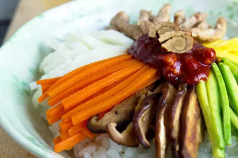
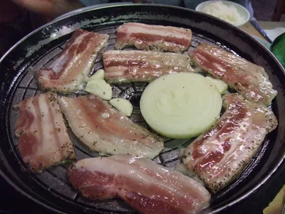
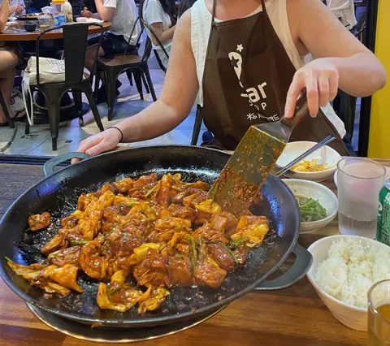
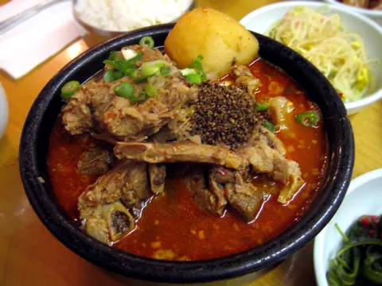
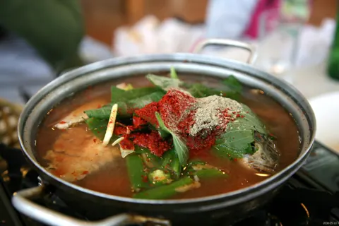
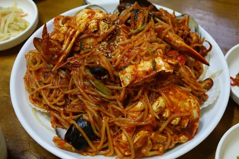

Gochujang
Une pâte de piment rouge fermentée avec du riz gluant et du soja. Épaisse, sucrée, piquante et profonde : c'est le goût rouge de la cuisine coréenne.
Où le trouver : En pot ou en barquette rouge, dans toutes les épiceries asiatiques. Se garde des mois au frigo une fois ouvert.
Pour le remplacer : Pas de vrai équivalent. En dépannage : du concentré de tomate, du piment en poudre, du miel et un peu de sauce soja.
Dans les recettes

Bibimbap Tteokbokki
Tteokbokki
Samgyeopsal Poulet frit coréen (yangnyeom)
Poulet frit coréen (yangnyeom) Bibim naengmyeon
Bibim naengmyeon Jeyuk bokkeum
Jeyuk bokkeum
Dakgalbi Oi muchim
Oi muchim Dakbokkeumtang
Dakbokkeumtang Bibim guksu
Bibim guksu Ojingeo bokkeum
Ojingeo bokkeum Dakgangjeong
Dakgangjeong Rabokki
Rabokki
Gamjatang Mul naengmyeon
Mul naengmyeon- Jjolmyeon

Maeuntang Beoseot jeongol
Beoseot jeongol Buldak
Buldak Godeungeo-gui
Godeungeo-gui- Jinmichae bokkeum
 Doraji muchim
Doraji muchim Tteok-kkochi
Tteok-kkochi- Sotteok-sotteok
- Kimchi bokkeum
 Chungmu gimbap
Chungmu gimbap Rosé tteokbokki
Rosé tteokbokki- Gochujang jjigae
 Sanchae bibimbap
Sanchae bibimbap
Haemul-jjim Nakji-bokkeum
Nakji-bokkeum- Dosirak à l'ancienne
 Ssambap
Ssambap- Dongtae-jjigae